ข้อสอบ 5 ข้อ รวม 20 คะแนน
- 10คะแนน1. เศรษฐศาสตร์มหภาคและการผลิตต้นทุน · TP/AP/MP · GDP · Real/Nominal · CPI · วัฏจักร · เป้าหมายมหภาค · ผลิตภาพ · ออม/ลงทุน · ระบบการเงิน
- 4คะแนน2. กำไรสูงสุด / ต้นทุนต่ำสุดภายใต้ข้อจำกัดLagrange · FOC · แก้หา x*, y*, λ*
- 2คะแนน3. การเลือกส่วนผสมของปัจจัยการผลิตIsoquant · MRTS · Isocost · MPL/MPK = w/r
- 2คะแนน4. ฟังก์ชันการผลิตและผลได้ต่อขนาดCobb-Douglas · α+β เทียบกับ 1
- 2คะแนน5. ต้นทุนทางสังคมและผลกระทบภายนอกSocial = Private + External
มีใบสูตรให้ จึงไม่ต้องท่องสูตร สิ่งที่ต้องฝึกคือ รู้ว่าโจทย์แบบไหนใช้สูตรไหน ตั้งสมการ Lagrange ให้ถูก และตีความผลลัพธ์ เช่น เกินดุลหรือขาดดุล IRS หรือ DRS ผลิตมากเกินไปหรือไม่
แนวคิดต้นทุน
ค่าเสียโอกาส (Opportunity Cost)
มูลค่าของทางเลือกที่ดีที่สุดที่ต้องสละไป แม้ไม่ได้จ่ายเงินจริงก็นับ
ห้องว่าง: เปิดโซนกาแฟเองกำไร 10,000 หรือให้เช่า 15,000/เดือน → เลือกเปิดกาแฟ
ค่าเสียโอกาส = 15,000 บาท (ค่าเช่าที่ไม่ได้รับ)
วันหยุดของ A: งานพิเศษได้ 2,000 · เที่ยวเสียค่าใช้จ่าย 1,000 · ดูหนังที่บ้านฟรี → A เลือกไปเที่ยว
ค่าเสียโอกาส = ค่าจ้าง 2,000 (ทางเลือกที่ดีที่สุดที่สละไป) · ต้นทุนรวมของการไปเที่ยว = 1,000 + 2,000 = 3,000
ชัดแจ้ง vs แอบแฝง
- Explicit = จ่ายเงินจริง ลงบัญชีได้ เช่น วัตถุดิบ ค่าแรง ค่าเช่า ค่าน้ำไฟ
- Implicit = ไม่ได้จ่ายเงิน แต่เสียโอกาส เช่น เงินเดือนที่ลาออกมา ค่าเช่าบ้านตัวเองที่ไม่ได้ปล่อยเช่า
คุณแพรวลาออกจากงานเงินเดือน 30,000 มาเปิดร้านกาแฟในบ้านตัวเอง (บ้านปล่อยเช่าได้ 10,000) ค่าวัตถุดิบ+แรงงาน 20,000
Explicit = 20,000 · Implicit = 30,000 + 10,000 = 40,000 · Economic = 60,000
ต้นทุนเอกชน vs ต้นทุนสังคม รายละเอียดในข้อ 5
กำไร เสริม
ต้นทุนระยะสั้น
| ตัว | สูตร | ตัวอย่าง (Q = 100) |
|---|---|---|
| TC | TFC + TVC | 5,000 + 3,000 = 8,000 |
| TFC | ไม่เปลี่ยนตาม Q (ค่าเช่า เครื่องจักร) | 5,000 |
| TVC | เปลี่ยนตาม Q (วัตถุดิบ แรงงานรายชิ้น) | 3,000 |
| ATC | TC/Q = AFC + AVC | 8,000/100 = 80 |
| AFC | TFC/Q | 50 |
| AVC | TVC/Q | 30 |
| MC | ΔTC/ΔQ | (8,070−8,000)/1 = 70 |
สไลด์เขียน MC = ΔTFC/ΔQ ที่ถูกคือ MC = ΔTC/ΔQ (= ΔTVC/ΔQ) เพราะ TFC ไม่เปลี่ยนตาม Q
เส้นต้นทุนระยะสั้นและระยะยาว
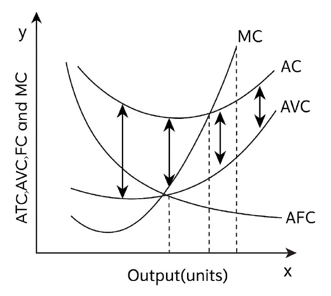
- MC < AC → AC ลดลง · MC > AC → AC เพิ่มขึ้น
- AC > AVC เสมอ ช่องห่างระหว่างสองเส้นคือ AFC ซึ่งแคบลงเรื่อยๆ
- AFC ลดลงตลอด (ต้นทุนคงที่ถูกเฉลี่ยไปบนจำนวนหน่วยที่มากขึ้น)
- AC, AVC, MC เป็นรูปตัว U เพราะกฎผลได้ลดน้อยถอยลง
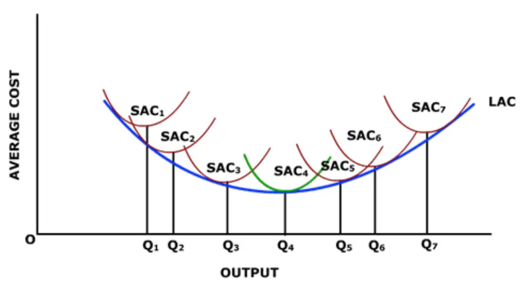
- ระยะยาว = ปรับขนาดโรงงานและปัจจัยได้ทุกตัว
- Optimum output = Q4 (จุดต่ำสุดของ LAC)
- Economies of scale = Q1 → Q4 (LAC ลดลง)
- Diseconomies of scale = Q4 → Q7 (LAC เพิ่มขึ้น)
- LMC = ต้นทุนของการผลิตเพิ่ม 1 หน่วยเมื่อปรับปัจจัยได้ทั้งหมด
โรงงานน้ำดื่ม ต้นทุนเฉลี่ยต่อขวด: เล็ก 5 · กลาง 3 · ใหญ่ 4 บาท ในระยะยาวควรเลือกขนาดไหน
→ ขนาดกลาง เพราะ AC ต่ำสุด = Minimum Efficient Scale
การผลิตระยะสั้น: TP · AP · MP
พื้นฐาน
- ปัจจัยการผลิต 4 ชนิด: ที่ดิน (Land) · แรงงาน (Labor) · ทุน (Capital คือสิ่งที่มนุษย์สร้าง เช่น เครื่องจักร) · ผู้ประกอบการ (Entrepreneurship)
- TP = f(A, K, L) A = ความรู้/เทคโนโลยี
- ปัจจัยคงที่ (เครื่องจักร อาคาร ที่ดิน) ปรับไม่ได้ในระยะสั้น · ปัจจัยแปรผัน (แรงงาน วัตถุดิบ พลังงาน)
- ระยะสั้น = มีปัจจัยคงที่อย่างน้อย 1 ตัว · ระยะยาว = ปรับได้ทุกตัว
- สัดส่วนคงที่: ต้องเพิ่ม L และ K ตามกันเท่านั้น · สัดส่วนไม่คงที่: สัดส่วนปรับได้
| K | L | TP | AP | MP | ช่วง |
|---|---|---|---|---|---|
| 1 | 1 | 10 | 10.0 | 10 | I |
| 1 | 2 | 24 | 12.0 | 14 | |
| 1 | 3 | 39 | 13.0 | 15 | |
| 1 | 4 | 52 | 13.0 | 13 | II |
| 1 | 5 | 61 | 12.2 | 9 | |
| 1 | 6 | 66 | 11.0 | 5 | |
| 1 | 7 | 66 | 9.4 | 0 | |
| 1 | 8 | 64 | 8.0 | −2 | III |
ตาราง MP ที่ L = 4 เขียนไว้ 3 ที่ถูกคือ 52 − 39 = 13
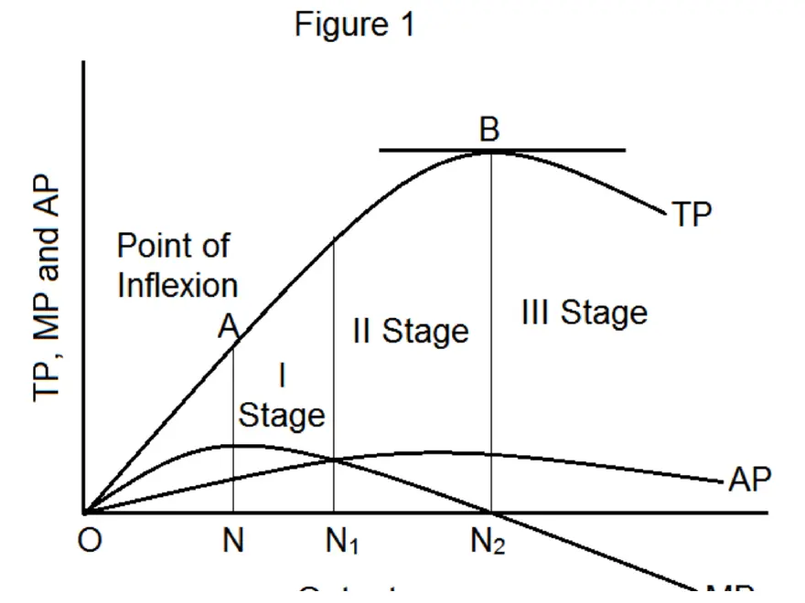
| ช่วง | เกิดอะไรขึ้น |
|---|---|
| I (0 → N1) | TP เพิ่มเร็ว · AP เพิ่มขึ้น · MP > AP |
| II (N1 → N2) | TP ยังเพิ่มแต่ช้าลง · AP และ MP ลดลง · ช่วงที่ควรผลิต |
| III (หลัง N2) | TP ลดลง · MP ติดลบ |
- MP > AP → AP เพิ่ม · MP = AP → AP สูงสุด · MP < AP → AP ลด
- MP = 0 ตรงจุดที่ TP สูงสุด
PPF (เส้นเป็นไปได้ในการผลิต)
- จุดบนเส้น = มีประสิทธิภาพ · จุดใต้เส้น = ไม่มีประสิทธิภาพ · จุดนอกเส้น = ผลิตไม่ได้
- เส้นโค้งออก = ค่าเสียโอกาสเพิ่มขึ้นเรื่อยๆ · เส้นเลื่อนออก = เศรษฐกิจเติบโต (ทรัพยากรหรือเทคโนโลยีเพิ่ม)
GDP และรายได้ประชาชาติ
GDP คือ
มูลค่าสินค้าและบริการขั้นสุดท้าย (ไม่นับวัตถุดิบหรือสินค้ากึ่งสำเร็จรูป) ที่ผลิตภายในประเทศ (ไม่สนว่าผู้ผลิตสัญชาติไหน) ในช่วงเวลาหนึ่ง (ปีหรือไตรมาส)
| GDP | NI / GNP | |
|---|---|---|
| นับจาก | สถานที่ผลิต (ในประเทศ) | สัญชาติของผู้มีรายได้ |
| คนไทยทำงานต่างประเทศ | ไม่นับ | นับ |
| บริษัทต่างชาติในไทย | นับ | ไม่นับ |
จาก GDP ไปจนถึงรายได้ที่ใช้จ่ายได้
วัด GDP ได้ 3 วิธี
- ผลผลิต (มูลค่าเพิ่ม): ขายข้าวสุก 100 − ข้าวสาร 40 = 60
- รายได้: ค่าจ้าง + ดอกเบี้ย + ค่าเช่า + กำไร
- รายจ่าย: Y = C + I + G + (X − M)
C = 5,000 · I = 3,000 · G = 2,000 · X = 1,500 · M = 2,500 (ล้านบาท)
GDP = 5,000 + 3,000 + 2,000 + (1,500 − 2,500) = 9,000 ล้านบาท · M > X แปลว่าขาดดุลการค้า ทำให้ GDP ลดลง
เฉลยในสไลด์เขียน 8,000 แต่บวกจริงได้ 9,000
ใช้ NI เพื่อดูภาพรวมเศรษฐกิจ · ใช้ GDP ต่อหัวเทียบมาตรฐานการครองชีพระหว่างประเทศ · ใช้ข้อมูลนี้กำหนดนโยบาย เช่น GDP โตต่ำ → ใช้นโยบายการคลังขยายตัว + นโยบายการเงินผ่อนคลาย
ส่วนประกอบของรายจ่ายรวม
- MPC = ΔC/ΔYd (อยู่ระหว่าง 0–1) · MPC + MPS = 1
- MPM = ΔM/ΔY ถ้าสูง รายได้จะรั่วไปกับการนำเข้า ตัวทวีคูณจึงลดลง
- บาทอ่อน → ส่งออกเพิ่ม · ดอกเบี้ยขึ้น → การลงทุนลดลง
รายได้ 10,000 → 12,000 · บริโภค 8,000 → 9,600 → MPC = 1,600/2,000 = 0.8 MPS = 0.2
I₀ = 500, b = 20, r = 5 → I = 500 − 20(5) = 400
รายได้ 1,000 → 1,500 · นำเข้า 300 → 400 → MPM = 100/500 = 0.2
หารายได้ดุลยภาพ เสริม
ตัวอย่าง C₀ = 200, MPC = 0.8, T = 100, I = 400, G = 600, X = 400, M₀ = 100, m = 0.2 → Y = 1,420 / 0.4 = 3,550
Nominal vs Real GDP · Deflator · CPI
- Nominal เพิ่มได้จากปริมาณหรือราคา (เงินเฟ้อ) → ถ้าจะดูการเติบโตจริงต้องใช้ Real
- ปีฐาน: Real = Nominal · Deflator = 100
- Deflator = 110 → ราคาโดยรวมสูงกว่าปีฐาน 10%
ปีฐาน 2022 · แอปเปิ้ล 100 ลูก @10 ส้ม 50 ลูก @20 → ปี 2023 แอปเปิ้ล 80 ลูก @20 ส้ม 70 ลูก @30
Nominal: 2022 = 2,000 · 2023 = 1,600 + 2,100 = 3,700 (+85%)
Real 2023 = 80×10 + 70×20 = 2,200 → เติบโตจริง 10% · Deflator 2023 = 168.2
| CPI | GDP Deflator | |
|---|---|---|
| วัดราคาของ | ตะกร้าสินค้าที่ผู้บริโภคซื้อ | สินค้าทุกชนิดที่ผลิตในประเทศ |
| สินค้านำเข้า | นับ | ไม่นับ |
| ความถี่ | รายเดือน | รายไตรมาส/รายปี |
| ใช้ดู | ค่าครองชีพ · เงินเฟ้อ | ระดับราคาทั้งเศรษฐกิจ |
แบบฝึกหัดประเทศ KOSEN (ปีฐาน 2020, ปีปัจจุบัน 2024)
| สินค้า | Q 2024 | P 2020 | P 2024 |
|---|---|---|---|
| ข้าว | 4,000 | 10 | 12 |
| เสื้อผ้า | 2,000 | 50 | 60 |
(1.1) Nominal = 4,000×12 + 2,000×60 = 168,000
(1.2) Real = 4,000×10 + 2,000×50 = 140,000
(1.3) Deflator = 168,000/140,000 × 100 = 120
(2.1) ตะกร้า ข้าว 3,000 + เสื้อผ้า 1,000: ปี 2020 = 80,000 · ปี 2024 = 96,000 → CPI = 120 → เงินเฟ้อ 20%
(2.3) ข้อนี้ได้เท่ากันเพราะราคาทั้งสองสินค้าขึ้น 20% เท่ากัน โดยทั่วไป CPI เหมาะกว่าสำหรับดูราคาสินค้าผู้บริโภค เพราะใช้ตะกร้าที่ครัวเรือนซื้อจริงและนับสินค้านำเข้าด้วย
วัฏจักรธุรกิจและเป้าหมายเศรษฐศาสตร์มหภาค
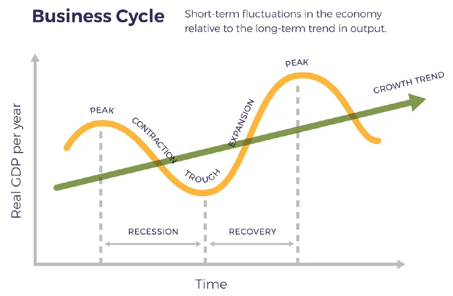
| ช่วง | ลักษณะ |
|---|---|
| ขยายตัว | GDP เพิ่มหลายไตรมาส · จ้างงานและลงทุนเพิ่ม · หุ้นขึ้น |
| จุดสูงสุด | ผลิตเต็มกำลัง · ว่างงานต่ำสุด · เงินเฟ้อเริ่มขึ้น |
| ถดถอย | GDP ลดติดกัน ≥ 2 ไตรมาส · เลิกจ้าง · ความเชื่อมั่นลด |
| จุดต่ำสุด | ว่างงานสูง · อุปสงค์อ่อน · เป็นจุดเริ่มฟื้นตัว |
ร้อนแรง/เงินเฟ้อสูง → นโยบายการคลังตึงตัว + นโยบายการเงินเข้มงวด (ดอกเบี้ย↑)
| เป้าหมาย | ตัวชี้วัด / สูตร | ตัวอย่าง |
|---|---|---|
| 1. เติบโตต่อเนื่อง | (GDPt−GDPt−1)/GDPt−1×100 | 15.5 → 16.2 = 4.52% → ขยายตัว |
| 2. จ้างงานเต็มที่ | ผู้ว่างงาน/กำลังแรงงาน×100 | 400,000/39,000,000 = 1.03% |
| 3. ราคามีเสถียรภาพ | (CPIt−CPIt−1)/CPIt−1×100 | 102 → 105 = 2.94% (อยู่ในกรอบ ธปท. 1–3%) |
| 4. ดุลการชำระเงินสมดุล | CA = X − M + รายได้สุทธิจากต่างประเทศ | 8.5 − 8.0 + (−0.3) = +0.2 → เกินดุล |
| 5. กระจายรายได้เป็นธรรม | Gini = A/(A+B) | 0.36 (0 = เท่าเทียม, 1 = เหลื่อมล้ำสุด) |
ตัวอย่างดุลบัญชีเดินสะพัดในสไลด์ใช้ 12.0 − 11.5 แต่โจทย์ให้ 8.5 กับ 8.0 คำตอบยังได้ +0.2 เหมือนกัน
- จ้างงานเต็มที่ ไม่ได้แปลว่าว่างงาน 0% แต่หมายถึงว่างงานอยู่ที่อัตราธรรมชาติ (ยังมีการว่างงานเชิงโครงสร้างและช่วงเปลี่ยนงาน)
- ถ้าเป้าหมายล้มเหลว: โตช้า → ภาษีเก็บได้ลดลง · ว่างงาน → ปัญหาสังคม · ขาดดุลเรื้อรัง → วิกฤตค่าเงิน · เงินเฟ้อ/เงินฝืด → ค่าครองชีพสูงหรือการลงทุนลดลง · เหลื่อมล้ำ → ความขัดแย้งทางการเมือง
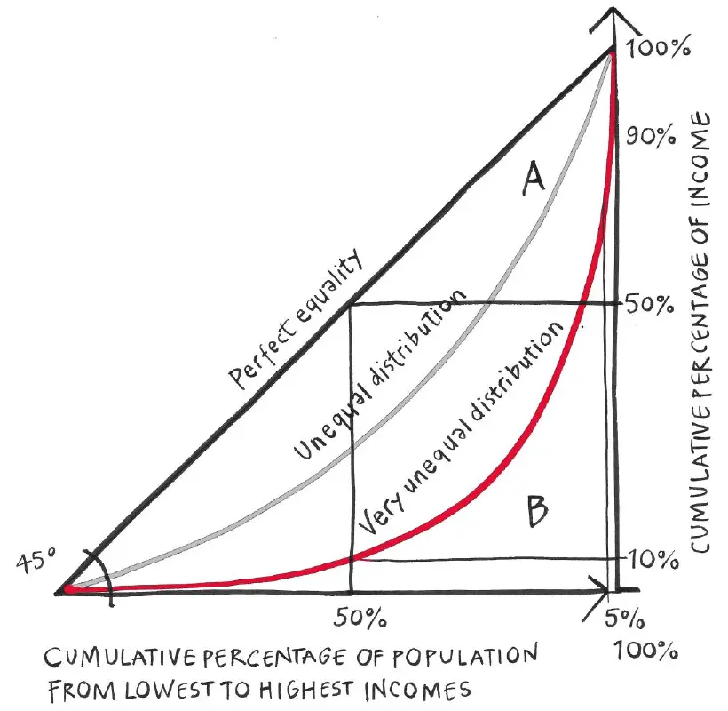
ผลิตภาพ สถาบัน และนโยบายรัฐ
| ผลิตภาพ | สูตร | ปัจจัยกำหนด |
|---|---|---|
| แรงงาน | Y/L | การศึกษา ทักษะ เทคโนโลยี |
| ทุน | Y/K | การลงทุน เทคโนโลยีที่ใช้กับทุน |
| TFP (A) | Y = A·F(K, L) | นวัตกรรม การจัดการ สถาบัน |
GDP 100 ล้าน · แรงงาน 50 คน → ผลิตภาพแรงงาน = 2 ล้านบาท/คน
เครื่องจักร 10 เครื่องผลิตได้ 1,000 → 100 · เพิ่มเป็น 20 เครื่องผลิตได้ 1,600 → 80 ผลผลิตรวมเพิ่ม แต่ผลิตภาพทุนลดลง
- TFP คือผลผลิตส่วนที่ทุนและแรงงานอธิบายไม่ได้ ใช้บอกว่าทำไมประเทศที่มี K และ L เท่ากันจึงมี GDP ต่างกัน และเป็นตัวขับเคลื่อนการเติบโตระยะยาวใน Solow model
- เมื่อพูดถึง “ผลิตภาพทางเศรษฐกิจ” ในระดับมหภาค มักหมายถึง TFP
สถาบันทางเศรษฐกิจ (Institutions)
- North (1990): สถาบัน = กฎกติกาที่มนุษย์สร้างขึ้นเพื่อกำหนดพฤติกรรม
- Acemoglu & Robinson (2012): สถาบันแบบ Inclusive ช่วยให้โต · แบบ Extractive ทำให้ถดถอย
- องค์ประกอบ: (1) สิทธิในทรัพย์สิน (เกาหลีใต้ vs เกาหลีเหนือ) (2) กฎหมายและการบังคับใช้สัญญา (3) นโยบายรัฐและระบอบการเมือง (4) ธรรมาภิบาล
- กรณีศึกษา: ไทยออก พ.ร.บ.อำนวยความสะดวกฯ ปี 2015 ทำให้อันดับ EoDB จาก 49 → 21 แต่ FDI อยู่ที่ $4–6 พันล้าน/ปี เพราะติดปัจจัยการเมือง · เวียดนามปฏิรูปกฎหมายปี 2014 ร่วมกับทำ FTA ทำให้ FDI $10–15 พันล้าน/ปี
- กลไก: ต้นทุนธุรกรรม↓ ความไม่แน่นอน↓ → การลงทุน↑ → A (TFP)↑
นโยบายรัฐเพื่อการเติบโตระยะยาว (7 แนวทาง)
| นโยบาย | กลไก | กรณีศึกษา |
|---|---|---|
| 1. โครงสร้างพื้นฐาน | ต้นทุนขนส่ง↓ ผลิตภาพธุรกิจ↑ | รถไฟความเร็วสูงจีน |
| 2. การศึกษา/ทักษะ | ผลิตภาพแรงงาน↑ (ทุนมนุษย์) | Educate to Innovate (สหรัฐฯ, STEM) |
| 3. เทคโนโลยี/R&D | ต้นทุน↓ ผลผลิตต่อหน่วย K และ L↑ | Made in China 2025 |
| 4. ปฏิรูปภาษี + ส่งเสริมลงทุน | ภาษีนิติบุคคล↓ → การลงทุน การจ้างงาน↑ | สหราชอาณาจักร 2015 |
| 5. เสถียรภาพเศรษฐกิจ | คุมเงินเฟ้อและค่าเงิน → ความเชื่อมั่น↑ | Fed ลดดอกเบี้ย + ซื้อสินทรัพย์ (2008, 2020) |
| 6. การค้าระหว่างประเทศ | Comparative Advantage (Ricardo) · ตลาดใหญ่ขึ้น → Economies of scale · FDI | NAFTA → USMCA |
| 7. ภาษีและต้นทุนธุรกิจ↓ | ต้นทุนคงที่และต้นทุนธุรกรรม↓ → การออมและการลงทุน↑ (Solow) | Energiewende (เยอรมนี) |
การออม การลงทุน และระบบการเงิน
การออม
การออม = เลื่อนการบริโภคไปในอนาคต และเป็นแหล่งทุนของการลงทุน
- T − G > 0 = งบประมาณเกินดุล · < 0 = ขาดดุล
- เกินดุลการค้า → การออม > การลงทุนในประเทศ
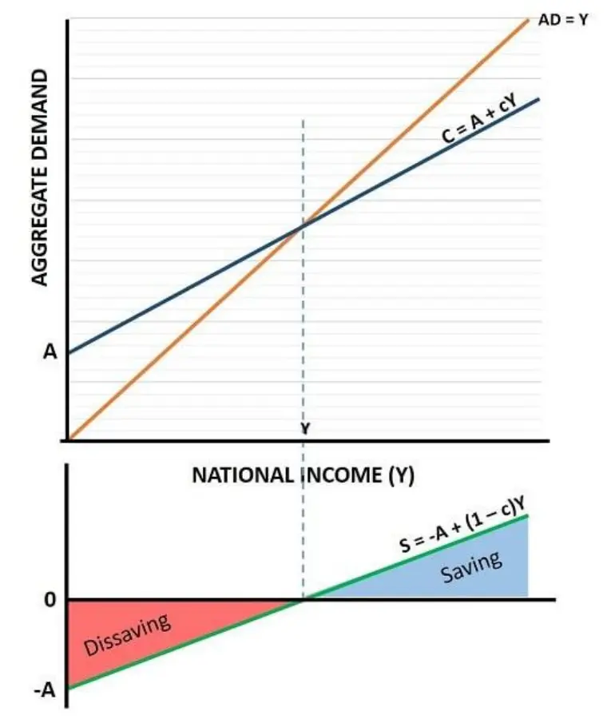
| ทฤษฎี | แนวคิด |
|---|---|
| Keynesian | C = a + bY · S = −a + (1−b)Y ออมตามรายได้ปัจจุบัน |
| Life-Cycle Modigliani, Brumberg | วัยเรียนกู้ → วัยทำงานออม → เกษียณใช้เงินออม · C = (W + ΣY)/T |
| Permanent Income Friedman | บริโภคตามรายได้ถาวร ถ้าได้รายได้ชั่วคราว (โบนัส) มักเก็บออม → consumption smoothing · C = k·Yp |
- Low Saving Trap: รายได้ต่ำ → ออมต่ำ → ลงทุนต่ำ → โตต่ำ → รายได้ต่ำ (วนเป็นกับดักความยากจน)
- Paradox of Thrift: ถ้าทุกคนออมพร้อมกัน → C↓ AD↓ GDP↓ → การออมรวมอาจไม่เพิ่ม
การลงทุน
| ทฤษฎี | สูตร / กฎ |
|---|---|
| MEC Keynes | MEC = R/C − 1 MEC ≥ r → ลงทุน |
| Accelerator | It = v(Yt − Yt−1) Y คงที่ → I = 0 · Y ลด → I ติดลบ |
| Tobin's q | q = มูลค่าตลาด / ต้นทุนทดแทนทุน q > 1 → ลงทุน · q < 1 → ไม่ขยาย |
ลงทุน 1 ล้าน คาดได้คืน 1.2 ล้าน → MEC = 20% · r = 15% → ลงทุน · r = 25% → ไม่ลงทุน
v = 3, GDP 10 → 10.5 ล้านล้าน → I = 3(0.5) = 1.5 ล้านล้าน
จุดอ่อน: MEC วัดจริงยาก · Accelerator ไม่รวมดอกเบี้ยและความเสี่ยง · q วัดยากและบิดเบือนได้เมื่อตลาดเป็นฟองสบู่
รัฐลงทุนแล้วเกิดอะไรขึ้น
- Multiplier: MPC = 0.8 → ตัวคูณ = 5 · ลงทุนเพิ่ม 100 → Y เพิ่ม 500
- Crowding-in: รัฐลงทุนในโครงการที่เพิ่มผลิตภาพ แล้วเอกชนลงทุนตาม เช่น EEC
- Crowding-out: รัฐกู้มาก → ดอกเบี้ย↑ → การลงทุนเอกชน↓ รุนแรงเมื่อใกล้ full employmentและเงินออมมีจำกัด ถ้ามีทรัพยากรว่างงานเยอะจะเกิดน้อย
ระบบการเงิน
เป็นตัวกลางส่งเงินจากผู้ออมไปยังผู้ลงทุน/ผู้กู้ มีหน้าที่ระดมทุน · จัดสรรทรัพยากร · สร้างสภาพคล่อง · บริหารความเสี่ยง
| ตลาด | อายุ | ตัวอย่าง |
|---|---|---|
| ตลาดเงิน | < 1 ปี | ตั๋วเงินคลัง (T-Bills) ใช้บริหารสภาพคล่อง |
| ตลาดทุน | > 1 ปี | หุ้น พันธบัตรระยะยาว อนุพันธ์ |
- สถาบันการเงิน: ธนาคารพาณิชย์ (รับฝาก ปล่อยกู้ สร้างปริมาณเงิน) · สถาบันการเงินเฉพาะกิจ (ออมสิน ธ.ก.ส. SME Bank) · บริษัทหลักทรัพย์ ประกัน กองทุนรวม
- เครื่องมือ: หุ้น (เป็นเจ้าของ ได้ปันผล) · พันธบัตร (เป็นหนี้ ได้ดอกเบี้ย) · อนุพันธ์ (Futures, Options, Swaps ใช้ป้องกันความเสี่ยงหรือเก็งกำไร)
กรณีโควิด-19 กับระบบการเงินไทย
วิกฤตไม่ได้เริ่มจากภาคการเงิน แต่เริ่มจากการปิดเมือง → รายได้หาย → เสี่ยง NPL · ไทยเป็น bank-based (สินเชื่อ > 120% ของ GDP)
มาตรการ: พักหนี้ · Soft loan (ธปท., ออมสิน) · บสย. ค้ำประกันสินเชื่อ SME · ลดดอกเบี้ยนโยบายเหลือ 0.50% · ลด FIDF fee 0.46 → 0.23%
หากำไรสูงสุด / ต้นทุนต่ำสุดภายใต้ข้อจำกัด (Lagrange)
- เขียนฟังก์ชันเป้าหมาย (max π หรือ min C) และข้อจำกัด
- ตั้ง ℒ = เป้าหมาย + λ[ค่าคงที่ − ข้อจำกัด]
- ดิฟ ℒ เทียบกับตัวแปรทุกตัวและ λ แล้วให้ = 0 (FOC)
- หารสมการ FOC สองสมการแรกเพื่อตัด λ จะได้ความสัมพันธ์ระหว่าง x กับ y
- แทนลงในข้อจำกัด → ได้ x*, y* → ย้อนกลับไปหา λ*
1) Profit Maximization
2) Cost Minimization
λ หมายถึงอะไร
- Cost min: λ* = MC คือต้นทุนที่เพิ่มขึ้นถ้าต้องผลิตเพิ่มอีก 1 หน่วย
- Profit max: λ* คือกำไรที่เพิ่มขึ้นถ้าผ่อนข้อจำกัด (R̄) ออกอีก 1 หน่วย (shadow price)
ทริกดิฟ Cobb-Douglas: ถ้า Q = A·LaKb จะได้ MPL = a·Q/L และ MPK = b·Q/K ดังนั้น MPL/MPK = (a/b)(K/L)
ตัวอย่าง A (ต้นทุนต่ำสุด): min C = 4L + 16K s.t. L0.5K0.5 = 20
→ L* = 40, K* = 10, C* = 160 + 160 = 320
λ*: 4 = 0.5λ·√(10/40) = 0.25λ → λ* = 16 (ผลิตเพิ่ม 1 หน่วย ต้นทุนเพิ่มประมาณ 16)
ตัวอย่าง B (กำไรสูงสุด): max π = 60x + 40y − x² − y² s.t. x + y = 30 (กำลังการผลิต)
→ x* = 20, y* = 10, λ* = 60 − 40 = 20
π* = 1,200 + 400 − 400 − 100 = 1,100 · ถ้าเพิ่มกำลังการผลิตอีก 1 หน่วย กำไรจะเพิ่มประมาณ 20
อีกแบบ: ผลผลิตสูงสุดภายใต้งบ max Q = L0.5K0.5 s.t. 4L + 16K = 320
ℒ = L0.5K0.5 + λ[320 − 4L − 16K] → ได้เงื่อนไขเดิม MPL/MPK = w/r → K = L/4 → 4L + 4L = 320 → L = 40, K = 10, Q = 20 (เป็นปัญหาคู่ของตัวอย่าง A)
การเลือกส่วนผสมของปัจจัยการผลิต
Isoquant (ผลผลิตเท่ากัน)
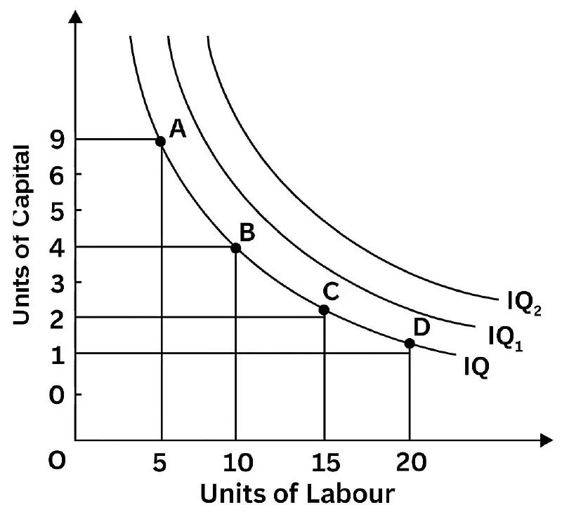
- ทุกจุดบนเส้นเดียวกันให้ผลผลิตเท่ากัน · เส้นที่อยู่ไกลจุดกำเนิดกว่า = ผลผลิตมากกว่า
- เส้นโค้งเว้าเข้าหาจุดกำเนิด (convex) เพราะปัจจัยทดแทนกันได้บางส่วน
MRTS
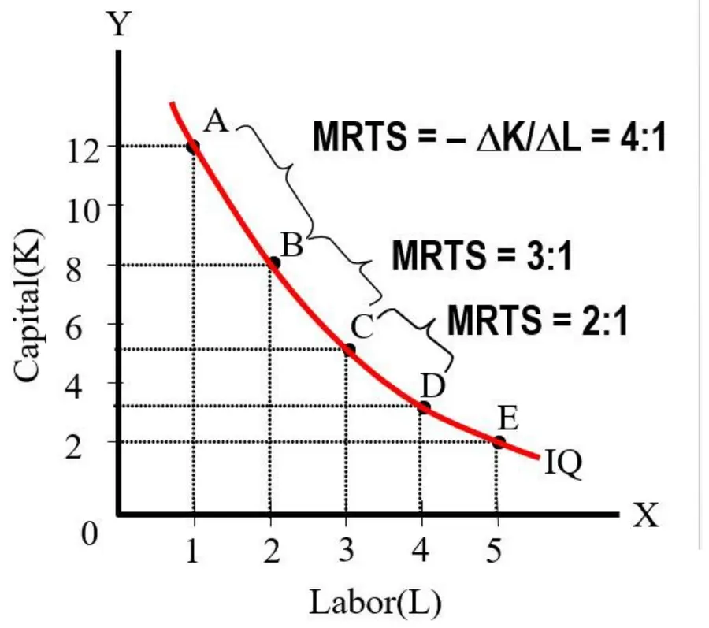
คือจำนวน K ที่ลดลงได้เมื่อเพิ่ม L 1 หน่วยโดยผลผลิตเท่าเดิม = ความชันของ Isoquant ค่านี้ลดลงเรื่อยๆ (4 → 3 → 2)
Isocost (ต้นทุนเท่ากัน)
- C เพิ่ม → เส้นเลื่อนออกขนาน
- w หรือ r เปลี่ยน → เส้นหมุน (ความชันเปลี่ยน)
จุดเหมาะสม (Optimum)
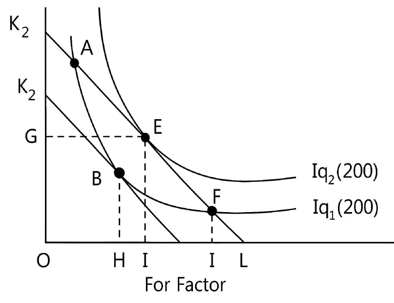
หรือเขียนได้ว่า MPL/w = MPK/r (ผลผลิตต่อเงิน 1 บาทเท่ากันทั้งสองปัจจัย)
- MPL/w > MPK/r → ใช้ L เพิ่ม ลด K
- MPL/w < MPK/r → ใช้ K เพิ่ม ลด L
Expansion Path
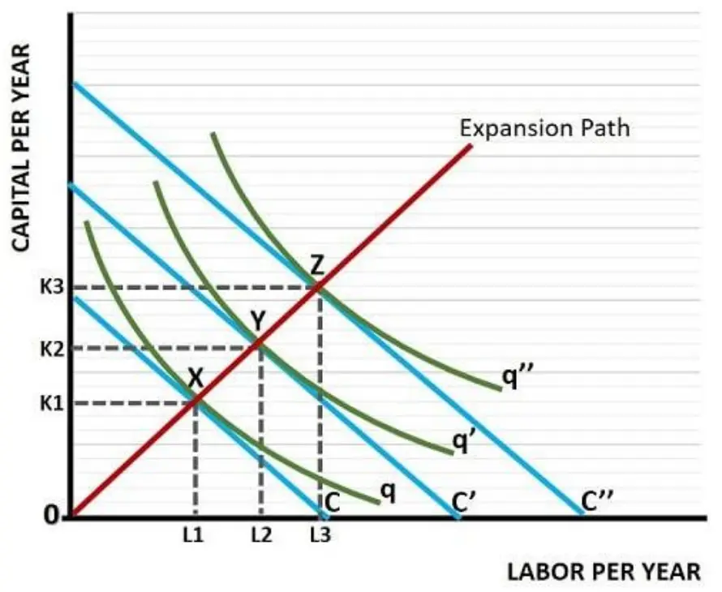
เส้นที่ลากผ่านจุดสัมผัสทุกระดับต้นทุน (X, Y, Z) แสดงว่าถ้าจะขยายการผลิตอย่างมีประสิทธิภาพ ควรเพิ่ม L และ K ไปตามเส้นนี้ · MPK/MPL = PK/PL
Q = L0.5K0.5, w = 20, r = 5, งบ C = 400 ควรใช้ L และ K เท่าไร
→ L = 10, K = 40, Q = √400 = 20
ค่าแรงแพงกว่าค่าทุน จึงควรใช้ทุนมากกว่าแรงงาน
ฟังก์ชันการผลิตและผลได้ต่อขนาด
| α + β | ผลได้ต่อขนาด | เพิ่มปัจจัยทุกตัว 2 เท่า |
|---|---|---|
| > 1 | Increasing RTS | ผลผลิตเพิ่มมากกว่า 2 เท่า |
| = 1 | Constant RTS | ผลผลิตเพิ่ม 2 เท่าพอดี |
| < 1 | Decreasing RTS | ผลผลิตเพิ่มน้อยกว่า 2 เท่า |
Q = 2K0.4L0.6
0.4 + 0.6 = 1 → Constant RTS
K เพิ่ม 1% → Q เพิ่ม 0.4% · L เพิ่ม 1% → Q เพิ่ม 0.6% (ถ้า A และปัจจัยอีกตัวคงที่)
พิสูจน์: 2(2K)0.4(2L)0.6 = 20.4+0.6·Q = 2Q
Q = 5L0.7K0.5 → 1.2 > 1 → IRS (ใช้ปัจจัยเพิ่ม 2 เท่า ผลผลิตเพิ่ม 21.2 ≈ 2.30 เท่า)
Q = L0.3K0.5 → 0.8 < 1 → DRS (20.8 ≈ 1.74 เท่า)
A ไม่มีผลต่อ RTS · ถ้าสมการไม่ใช่ Cobb-Douglas ให้แทน L → tL, K → tK แล้วดูว่า Q ใหม่เพิ่มขึ้นมากกว่า เท่ากับ หรือน้อยกว่า t เท่า
สัญลักษณ์ในสไลด์ไม่ตรงกัน หน้าระยะสั้นเขียน Q = A·LβKα แต่หน้า RTS เขียน Q = A·LαKβ ไม่ต้องสนว่าตัวไหนชื่ออะไร ให้บวกเลขชี้กำลังทั้งหมดแล้วเทียบกับ 1
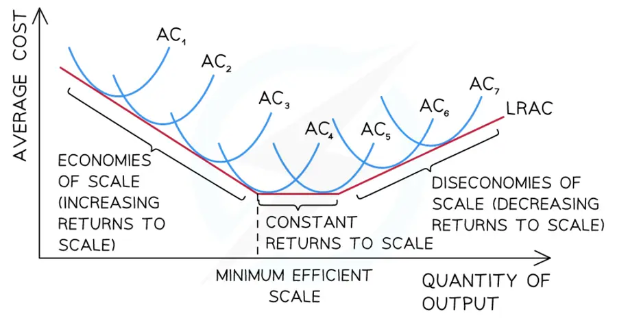
| Returns to Scale | Economies of Scale | |
|---|---|---|
| ดูอะไร | ผลผลิตเมื่อเพิ่มปัจจัยทุกตัวในสัดส่วนเดียวกัน | ต้นทุนเฉลี่ยระยะยาวเมื่อขยายขนาด |
| ฝั่งดี | IRS | Economies → LAC↓ |
| ฝั่งแย่ | DRS | Diseconomies → LAC↑ (ปัญหาการจัดการ ทรัพยากรมีจำกัด) |
ต่างจากกฎการลดน้อยถอยลงของ MP ซึ่งเป็นเรื่องระยะสั้นที่เพิ่มปัจจัยแค่ตัวเดียว ส่วน RTS เป็นเรื่องระยะยาวที่เพิ่มปัจจัยทุกตัวพร้อมกัน
ต้นทุนทางสังคมและผลกระทบภายนอก
(ผลกระทบภายนอกเชิงลบ)
(ผลกระทบภายนอกเชิงบวก)
โรงงานเหล็ก: ต้นทุนเอกชน 1,000,000/เดือน · ชุมชนเสียค่ารักษาสุขภาพเพิ่ม 300,000/เดือน
Social Cost = 1,000,000 + 300,000 = 1,300,000 บาท
โรงงานคิดแค่ 1,000,000 จึงผลิตมากเกินไป เพราะไม่ต้องรับผิดชอบผลกระทบต่อคนอื่น → เป็น Negative Externality
เสริม แนวแก้ปัญหา: ถ้าเป็นผลเสีย → เก็บภาษีเท่ากับต้นทุนภายนอก หรือออกกฎคุมมลพิษ · ถ้าเป็นผลดี → ให้เงินอุดหนุน เช่น วัคซีนฟรี